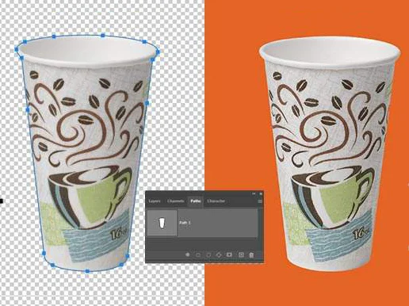
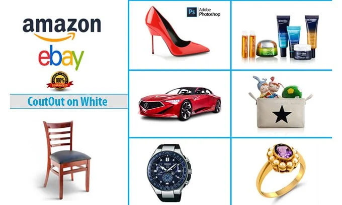
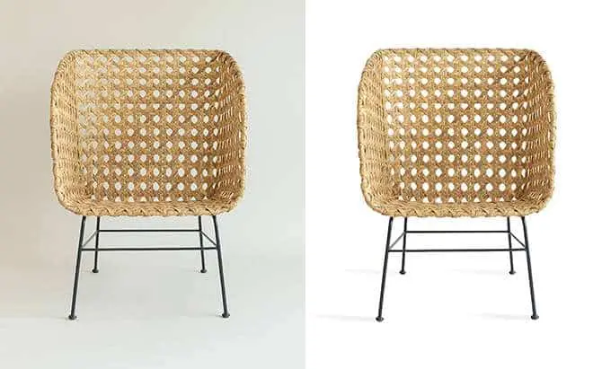
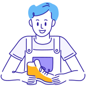
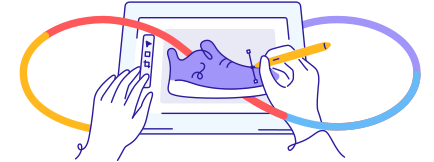

A busy sports photographer with batches of edits due from a recent event.
Professional photo editing
Clipping path services
Carefully hand-drawn clipping paths for crisp, clean photos.
Put your product on any background. Take tedious, nitty-gritty photo edits off your plate with outsourced clipping path services.
Starting at $0.39 per image
Get my image edits



More time for your work
Spending all day editing sucks the passion out of your work
You need perfect clipping paths and clean photos to attract customers to your products and make them want what you're selling. But when you're launching hundreds — or even thousands — of products a week, clipping path edits can take days.
You don't have to waste all that time in Photoshop doing edits yourself. And you definitely don't have to stay up too late frantically trying to finish clipping paths on time. We're betting that's not what you signed up for when you started doing this work.
Built around your workflow
How to know if outsourced clipping path services are right for you
You don't have to do everything yourself. Outsourced clipping path services are ideal if you are…

An ecommerce pro who wants to move the needle instead of fiddling around in Photoshop.
A headshot photographer with tight client deadlines and tons of other deliverables to wrangle.
A closer look
Check out our beautiful clipping projects
Free trial
Get 2 Images Clipped - On Us
See the quality for yourself before committing to a full batch. Upload two images and see how Path handles your clipping paths by hand for clean, accurate cutouts that are ready to use.
Made for the details
Why choose Path Edits?
Expert, hand-drawn clipping paths
No automated shortcuts — every image is edited with care.
Fast turnaround
Get large batches back in as little as 6 hours.
Transparent pricing
Starting at just $0.39 per image, with no hidden fees.
Pixel-perfect results
The cleaner your product photos, the more conversions you’ll drive.
Leave your image edits to the experts
Outsource even your most intricate clipping path projects to our team of experts, starting at $0.39 per image.
Get large batches of images edited faster and more affordably, in as little as 6 hours. Hand-drawn clipping paths and careful attention to detail mean clean photo cutouts. The cleaner the photos, the more conversions you'll get.
Simple from start to finish
How it works
- 1
Order your edits
Upload images, describe your needs, and get instant, upfront pricing.
- 2
Our designers get to work
Professional editors craft your paths by hand while you focus on your core business.
- 3
Receive your images
Get your finished files in as little as 6 hours, double-checked for perfection.
Questions?
Email support
Start chatBulk ordering
Need more than 1,000 photos edited? Talk to us about bulk pricing options.
Get bulk pricingTry us risk-free: if you’re not 100% satisfied, we’ll make it right — guaranteed.
Get my image editsA few helpful answers
Frequently asked questions
Learn more about clipping paths, pricing, and how to choose the right edit for your images.
Clipping paths are the digital way to cut an item out of a photo. Remember cutting out pictures from magazines? It's just like that, only digital. If you're cutting out a subject with hair or fur, you probably need image masking — another cutout technique used for more intricate edges.
Once our clipping path specialists finish the path, everything inside it is included and everything outside is removed.
Clipping path is also called:
- Image clipping
- Deep etching
- Photo cutout
- Multi-path
- Multiple clipping paths
- Closed vector path
- Closed vector shape


Clipping paths let you manipulate the background of your subject. Create white backgrounds for selling products online, or display your subjects in any setting.
Not all clipping paths are alike, so rates vary by project. Every image is different, but our standard pricing guidelines keep your rate clear and objective.
1Basic clipping paths $0.39 per image
For straightforward products with simple outlines. Each image is outlined by hand so the final cutout looks natural.


Examples: simple boxes, single glasses, and simple circles.
2Simple clipping paths $0.69 per image
For objects with more edges and curves, like a wine bottle or car, and objects with a hole such as a mug handle or ring.


Examples: simple jewelry, vehicles, clothing, and standalone furniture.
3Medium clipping paths $1.29 per image
For objects with complicated edges that need several paths combined to create the final result.


Examples: groups of simple items, shoes, and clothing with complex shapes.
4Complex clipping paths $2.99 per image
For very complicated edges, multiple holes, and multiple objects or varied levels of transparency.


Examples: layered products and objects with complex outlines.
5More complex clipping paths $6.49 per image
For complex clipping paths with additional paths carefully crafted within the product itself.


Examples: bicycles, intricate jewelry, wire furniture, and products needing selective color changes.
6Super complex clipping paths $10.99 per image
For images that need many individual paths and multiple techniques to achieve a natural result.


Examples: furniture with cutouts, mesh, interlinking jewelry, crates, and complex machinery.
Choose a clipping path when a product has a clear, firm edge and you need a clean cutout that can be placed on a new background.
It works especially well for ecommerce listings, catalog photos, marketplace images, and product batches that need a consistent finish.
Clipping paths work best on subjects with hard edges and well-defined outlines, such as shoes, bottles, packaging, electronics, accessories, furniture, and vehicles.
Soft, fuzzy, transparent, or very intricate edges may need image masking or a combination of editing techniques.
A clipping path uses a hand-drawn vector outline to isolate crisp, defined edges. Image masking is better suited to soft details such as hair, fur, mesh, or transparent materials.
If an image has both hard and soft edges, an editor may combine the two methods for a natural result.
Background removal describes the result: separating a subject from its background. A clipping path is one precise, hand-drawn way to get that result, especially when the edge needs to stay crisp and controlled.
Projects range from basic paths for simple products to complex and super complex paths for detailed shapes, multiple cutouts, grouped products, jewelry, and machinery.
The right level depends on the number of edges and details that need careful editing, which is reflected in the per-image price.
Turnaround depends on image quantity and complexity. Large batches can be completed in as little as 6 hours.
If you have a deadline, include it with your order so the team can confirm the expected delivery time before editing begins.
Yes. You can request two free edits to review the edge quality, consistency, and finish on your own images before sending a larger batch.
A clipping path may not be the best fit when the subject has hair, fur, smoke, mesh, translucent materials, or soft edges. Those details often need masking or a combined cutout approach to look natural.
For more about the editing workflow, see how our image editing process works. You can also contact our team with questions about a specific image or project.
Trusted by creative teams
Join thousands of ecommerce entrepreneurs and photographers who trust Path for quality photo edits
Your talent and creative energy are best spent doing what you love — not fiddling in Photoshop for hours figuring out tedious edits.
40,000+
clients have entrusted their image editing needs to us.
8 million+
images enhanced and brought to life.

We don't use automated software here. Every clipping path is carefully done by hand. We're not finished until every product appears natural, and the colors and textures look just right.